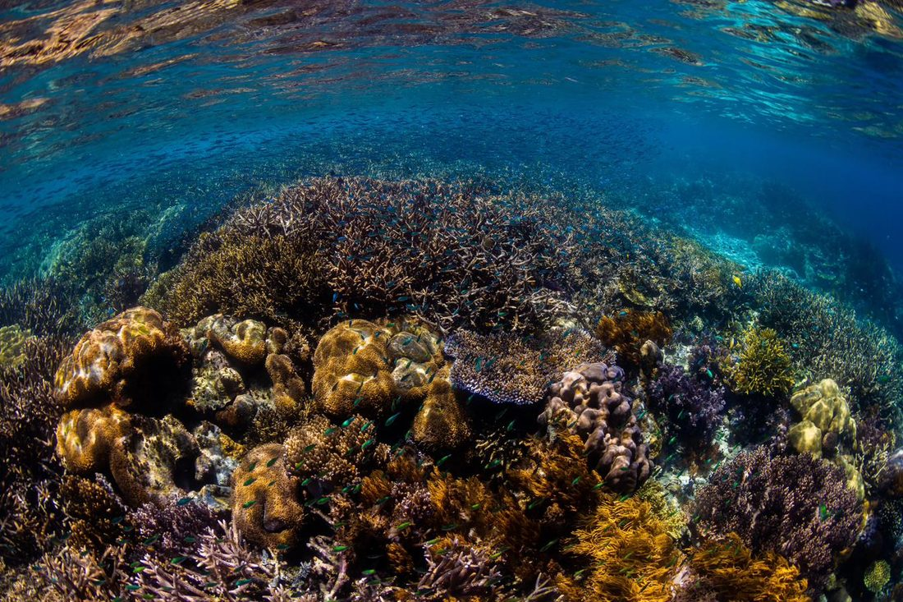

Velký bariérový útes
Největší korálový útes na světě — a jediný živý útvar vytvořený jiným druhem než člověkem, který je viditelný z vesmíru.
Velký bariérový útes je typ útesu, který kopíruje pobřeží pevniny. Nevznikl najednou — je to řetězec tisíců menších útesů, které dohromady tvoří jeden z největších ekosystémů na Zemi. Bariérový útes od pevniny odděluje laguna.
Když vědci provedli sondu celým útesem až na původní podloží, zjistili, že je přibližně 600 000 let starý. Přitom budují jej mikroskopičtí polypi útesotvorných korálů, kteří rostou jen několik centimetrů až desítek centimetrů za rok.

Velký bariérový útes je domovem více než 1 500 druhů ryb, 4 000 druhů měkkýšů, 240 druhů ptáků a šesti ze sedmi mořských druhů želv. Hostí také velryby, delfíny a dugongy. Celý ekosystém zahrnuje přes 344 000 km² a je chráněn jako UNESCO Světové dědictví.
Základním stavebním kamenem útesu jsou kolonie polypů, kteří dohromady vytvářejí pevnou schránku z uhličitanu vápenatého. Jak kolonie roste, přerůstá a opouští své starší části — z nich se stává základ útesu. Korálové porosty poskytují nespočet různě velkých úkrytů, od mikroskopických až po velké jeskyně uvnitř útesu.